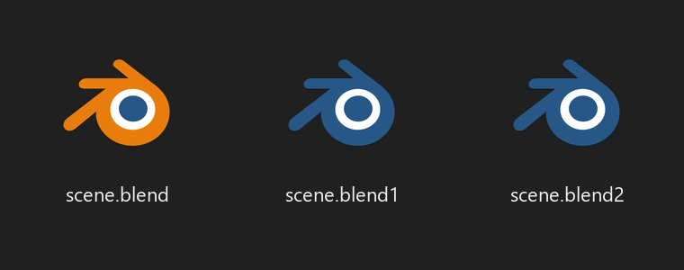

Blend1 Blue
Blender's .blend1 backup files get a blue Blender icon on Windows,
so you stop opening the backup by accident.

Install with updates (recommended)
- In Blender, open Edit → Preferences → Get Extensions.
- Open Repositories (top right), click +, then Add Remote Repository.
- Paste
https://bayromest.github.io/blend1-blue/index.jsonand click Create. - Search for Blend1 Blue and click Install.
Or drag and drop
Drag the blend1_blue link below into a Blender window. Blender offers to add this repository too, so you still get updates.
Add-on
| ID | Name | Description | Website | Blender Versions | Python Versions | Platforms | Size |
|---|---|---|---|---|---|---|---|
| blend1_blue-1.0.0 | Blend1 Blue | Blue icons for .blend1 backups so you never open them by mistake | link | 4.2.0 - ~ | all | windows-x64, windows-arm64 | 48.9KB |